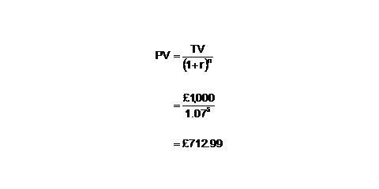
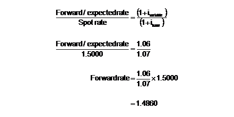
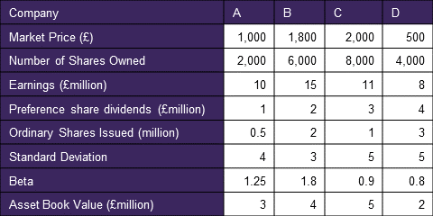
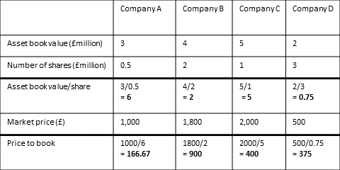
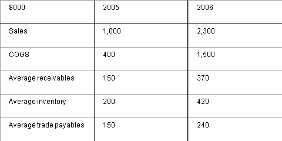
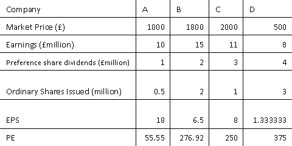
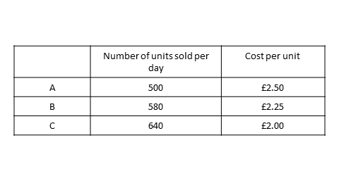
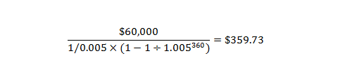

Practice Mock Exam
Question 1
[1012601]
The manager of a pension fund, in considering possible investments in the UK equity sector, will need to be most concerned about:
A
Capital gains tax
B
Income tax
C
The transaction costs of buying and selling shares
D
Corporation tax
The correct answer is: C - The transaction costs of buying and selling shares
Explanation
Pension funds do not pay income, capital gains or corporation tax.Question 2
[1066825]
Hedge funds usually charge a:
A
Management fee of 5% and a performance fee of 25%
B
Flat fee irrespective of performance
C
Flat fee only if the fund has improved on its previous performance
D
Fixed fee of 1-2% and a management fee of 20-25%
The correct answer is: D - Fixed fee of 1-2% and a management fee of 20-25%
Explanation
The IMC uses the term 'fixed fee' to cover the cost independent of performance and management fee to cover the performance dependent cost.Question 3
[1012688]
Which of the following is the best definition of the marginal propensity to import?
A
The amount of money spent on imports.
B
The fraction of income spent on imports net of exports.
C
The amount of money spent on imports net of exports.
D
The fraction of income spent on imports.
The correct answer is: D - The fraction of income spent on imports.
Explanation
The marginal propensity to import is the proportion of income that an individual would spend on imports.Question 4
[1012693]
Jane, an analyst, wants to present what percentage of a particular gilt issue is held by each category of investor, such as hedge funds, insurance companies, etc. Which of the following would best represent this information?
A
Scattergram
B
Histogram
C
Tubularogram
D
Pie Chart
The correct answer is: D - Pie Chart
Explanation
A pie chart shows relative percentages and is ideal for situations where the total adds up to 100%, such as the asset allocation of a portfolio, or the example in the question.Question 5
[1012802]
Coupon stripping means:
A
Separating responsibility for repayment of capital and interest
B
Separating coupons from redemption proceeds
C
Zero coupon bonds
D
Acquiring a mixed portfolio of bonds and selling some off in order to raise the risk profile of the portfolio
The correct answer is: B - Separating coupons from redemption proceeds
Explanation
Coupon stripping is the separation of coupons from capital amounts. The UK Government issues gilts that are strippable. This means the coupons and capital components may be traded separately.Question 6
[1012804]
Which of the following is true about a company with a relatively high P/E ratio?
A
Expectation of future earnings growth
B
Expectation of future earnings decline
C
Expectation of future earnings stability
D
Expectation of future earnings gearing increase
The correct answer is: A - Expectation of future earnings growth
Explanation
The P/E ratio reflects market expectations of earnings growth. The higher the ratio, the more confidence there is in the market.Question 7
[1012805]
Security X has a beta of 0.7. Security Y has a beta of 1.3. An investor has £100 and wishes to generate returns consistent with a beta of 1. Which of the following proportions should he adopt?
A
X = 80 Y = 20
B
X = 70 Y = 30
C
X = 30 Y = 70
D
X = 50 Y = 50
The correct answer is: D - X = 50 Y = 50
Explanation
The beta of a portfolio is the weighted average of the betas of its component stocks: in D: 0.5 x 0.7 = 0.35 is X's weighted beta 0.5 x 1.3 = 0.65 is Y's weighted beta -------- 1.00 is the beta of the portfolio.Question 8
[1012810]
Which of the following statements are true of qualifying life policies and personal pension plans?
A
I and III
B
I and IV
C
II and III
D
II and IV
The correct answer is: A - I and III
Explanation
Tax relief is obtained at the time of investment for PPPs. Tax relief is received on life policies only on their maturity.Question 9
[1012811]
Which of the following is/are true?
A
I, II, III and IV
B
I, II and IV
C
I and IV
D
IV only
The correct answer is: C - I and IV
Explanation
Note, by definition, extreme (or unusual) range variances are unlikely to recur and so should not be used.Question 10
[1012819]
An investor purchases a Euro investment for Euro 700 when the exchange rate at £1 = Euro 2.55. What is the sterling currency return if the rate moves to £1 = Euro 2.75?
You should answer this question by typing your answer in the following format: +0.0 oe -0.0
The correct answer is: -7.3 - -7.3
Explanation
The sterling value of the investment has fallen from £274.51 (Euro 700 / 2.55) to £254.54 (Euro 700 / 2.75). (£274.51 - £254.54) / £274.51 = -7.3%.Question 11
[1012820]
A company issues a convertible bond. What happens to the conversion ratio if there is a 1:1 scrip and the issue is protected?
A
Stays the same
B
Doubles
C
Halves
D
Cannot calculate
The correct answer is: B - Doubles
Explanation
A 1:1 scrip will double the holdings of existing shareholders. Therefore, the conversion terms of any protected convertible bonds will also double.Question 12
[1012826]
A cash flow of £1,000 receivable in five years' time has a present value of £712.99. What interest rate has been used to calculate the present value?
A
5%
B
6%
C
7%
D
8%
The correct answer is: C - 7%
Explanation
One way to do this question is to rearrange the formula with r as the subject. A quicker way is trial and error; pick one of the answers (start with the middle two B or C) and insert it into the discounting / compounding formulas. In this case its B:
Question 13
[1012829]
What is the terminal value of an investment of £1,000 invested at 1.3% per quarter for five years and three months?
A
£1,264.17
B
£1,269.43
C
£1,275.32
D
£1,311.60
The correct answer is: D - £1,311.60
Explanation
There are 21 periods in the life of the investment. The answer is achieved by compounding £1,000 for 21 periods at 1.3%:
Question 14
[1012833]
Which of the following are key issues facing a tracker fund manager?
A
I only
B
I and II
C
II and III
D
I and III
The correct answer is: C - II and III
Explanation
Market timing forms part of an active strategy and is therefore not of relevance to a tracker fund manager.Question 15
[1012835]
Which of the following is true of UK government index-linked securities?
A
The redemption price and the coupon are related to the RPI
B
Only the coupon is related to the RPI
C
The market price and the coupon are related to the RPI
D
Only the market price is related to the RPI
The correct answer is: A - The redemption price and the coupon are related to the RPI
Explanation
Both coupon and capital are related to the RPI, with an eight month lag. The market price is fixed by supply and demand.Question 16
[1012837]
A warrant, trading at 70p, has an exercise price of 440p and the underlying shares are trading at 400p. If the holders receive two ordinary shares for each warrant, what is the percent premium?
A
8.75%
B
10.00%
C
18.33%
D
20.25%
The correct answer is: A - 8.75%
Explanation
The percent premium of a warrant is calculated using the following formula: (Warrant price - Formula Value)/(# of shares created X Current share price)
Question 17
[1012839]
If UK and USA expected inflation rates are 7% and 6% respectively, and the spot rate is $1.50 per £, assuming purchasing power parity, what is the expected spot rate in one year?
A
$1.39
B
$1.49
C
$1.59
D
$1.69
The correct answer is: B - $1.49
Explanation
Use the purchasing power parity formula:
Question 18
[1012841]
A company's ordinary shares have a nominal value of 50p. If the company does a share split, such that the new nominal value is 25p, how many shares has an original share been split into?
A
Two
B
Five
C
Eight
D
10
The correct answer is: A - Two
Explanation
A share split means the original shares are split into more shares with a smaller nominal value. A share with a nominal value of 50p will therefore split into two shares with nominal values of 25p.Question 19
[1012842]
A company's dividend is currently 40p. The expected dividend growth rate is 7% p.a. If investors require a total return of 11% p.a. what is the cum-div value of the company's shares?
A
1,000p
B
1,070p
C
1,110p
D
1,020p
The correct answer is: C - 1,110p
Explanation
Use Gordon's growth to calculate the ex-div value of the share: Ex-div share price = Do (1+g) / (r-g), where Do is the current dividend, g is the expected growth rate of the dividend and r is the investor's required rate of return. Applying the numbers from the question: = 40p x 1.07 / 0.04 = 1,070p and then add on the dividend for the cum-div price: 1,070p + 40p = 1,110p.Question 20
[1012843]
The conversion ratio of a convertible bond with a par value of £100 equals 50. What is the conversion price?
A
£2.00
B
£1.50
C
£1.00
D
£0.50
The correct answer is: A - £2.00
Explanation
The conversion PRICE is simply the nominal value divided by the number of shares as per the conversion terms.Question 21
[1012846]
Selling a call and a put on the same underlying asset, with the same expiry and exercise price creates a:
A
Short strangle
B
Long strangle
C
Short straddle
D
Long straddle
The correct answer is: C - Short straddle
Explanation
A straddle is a call and a put on the same underlying asset, with the same exercise price and expiry. As both are sold, the strategy is a 'short' straddle.Question 22
[1012847]
What is a tap issue of gilts by the Debt Management Office?
A
When the DMO issues small quantities of stock directly into the secondary market
B
Where the UK government 'taps' into the international capital markets via a Euro-denominated issue
C
Retail investors are able to 'tap' into the issue via a non-competitive bid
D
On the initial issue, bidders pay the price they have offered to the DMO
The correct answer is: A - When the DMO issues small quantities of stock directly into the secondary market
Explanation
An issue is announced and investors are invited to tender. If bidders do not offer the price required by the DMO, the part of the issue not taken up is temporarily withdrawn and released into the market at a later date. This subsequent release is known as a 'tap'.Question 23
[1012848]
Which of the following best describes how the majority of business is conducted on NYSE Liffe?
A
Open outcry
B
Over the counter
C
Electronic order driven
D
Quote driven
The correct answer is: C - Electronic order driven
Explanation
NYSE Liffe uses an electronic trading platform called NYSE Liffe CONNECT.Question 24
[1012849]
Which of the following types of inflation would be caused by excess aggregate demand?
A
Demand pull
B
Cost push
C
Demand push
D
Cost pull
The correct answer is: A - Demand pull
Explanation
Cost push is caused by rising factory prices.Question 25
[1012852]
A stock has a beta of 0.8; the risk free return is 9%; if the market return was 15% what would the expected return of the stock be?
You should answer this question by typing the correct numbers in the following format without any symbols: 00.0
The correct answer is: 13.8 - 13.8
Explanation
Using CAPM: Expected return = 9% + 0.8(15%-9%) = 13.8%.Question 26
[1012853]
As a portfolio becomes increasingly well diversified, which of the following will be driven towards zero?
A
Total Risk
B
Systematic Risk
C
Unsystematic Risk
D
None of the above
The correct answer is: C - Unsystematic Risk
Explanation
Systematic risk is also known as business risk, market risk and non-specific risk. Unsystematic risk (specific risk) can be diversified away.Question 27
[1012854]
In what type of pension fund does the sponsoring company agree to pay members of the scheme a predetermined percentage of salary, subject to the contributor's years of service?
A
Defined benefit
B
Defined contribution
C
Personal pension
D
Stakeholder pension
The correct answer is: A - Defined benefit
Explanation
Company pension schemes tend to be defined benefit although these are becoming less popular!Question 28
[1012855]
A life assurance policy that covers the life of an individual over a specific period is called:
A
Whole life assurance
B
Term assurance
C
Endowment assurance
D
With profits assurance
The correct answer is: B - Term assurance
Explanation
Whole life assurance pays out on death. Endowment assurance pays out on the earlier of death and expiry of the agreed term.Question 29
[1012857]
An active fund manager assumes that better results can be obtained by taking on which of the following risks:
A
Systematic
B
Tracking
C
Beta
D
Specific/idiosyncratic
The correct answer is: D - Specific/idiosyncratic
Explanation
An active fund manager will adopt the technique of stock picking, i.e. selecting 'hot stocks' that outperform the market as a whole.Question 30
[1012858]
Abnormal return for a portfolio is calculated as:
A
Actual return less market expected return
B
Actual return less risk-free return
C
Actual return less portfolio expected return
D
Actual return less market risk premium
The correct answer is: C - Actual return less portfolio expected return
Explanation
Abnormal return is measured by the Jensen measure of performance.Question 31
[1012859]
What is the Sharpe measure of a fund whose actual return is -15%, its beta is -0.5, its standard deviation of returns is 10% and the risk-free return is 5%?
A
1.5
B
-2.0
C
40
D
-30
The correct answer is: B - -2.0
Explanation
Using the Sharpe formula: Sharpe = Return to the portfolio - Risk free return Standard deviation of the portfolio = -15% - 5% = -20% 10% 10% = - 2.0 The beta in the question is a red herring.Question 32
[1012861]
What is the return due to benchmark risk if the risk-free return is 3%, return due to market timing is 5%, return due to security selection is 10% and the total return is 30%?
A
22%
B
17%
C
15%
D
12%
The correct answer is: D - 12%
Explanation
Decompose the different elements of return; Total return = risk free return + return due to market timing + return due to stock selection + return due to benchmark risk. therefore; 30% = 3% + 5% + 10% + return due to benchmark risk. Therefore; Return due to benchmark risk = 12%.Question 33
[1012862]
Total return less the risk-free return for a fund equals:
A
Return due to benchmark risk plus return due to market timing and security selection
B
Return due to benchmark risk plus return due to market timing
C
Return due to benchmark risk plus return due to security selection
D
None of the above
The correct answer is: A - Return due to benchmark risk plus return due to market timing and security selection
Explanation
Total return = Risk free return + Return due to benchmark risk + Return due to security selection + Return due to market timing therefore: Total return - risk free return = Return due to benchmark risk + Return due to security selection + Return due to market timingQuestion 34
[1012863]
A qualified audit report implies that:
A
The company is in financial difficulty
B
The auditors cannot come to an opinion on the financial statements
C
The auditors intend to resign at the Annual General Meeting
D
The financial statements may not give a true and fair view in all respects
The correct answer is: D - The financial statements may not give a true and fair view in all respects
Explanation
The job of an auditor is to report to the shareholders on the 'truth and fairness' of the financial statements that have been prepared by the directors.Question 35
[1012865]
A company has 16m 40p ordinary shares in issue, originally issued at a premium of 25p each. It decides to make a 2 for 4 bonus issue to its existing shareholders. How much cash will the company receive as a result of this issue?
A
£8m
B
£3.2m
C
£2m
D
Nil
The correct answer is: D - Nil
Explanation
There are no proceeds from a bonus issue.Question 36
[1012866]
Which of the following headings are to be found in cash flow statements under IFRS?
A
I, II and III
B
III and IV
C
I, II, III and IV
D
II and III
The correct answer is: A - I, II and III
Explanation
Question 37
[1012869]
A company diluted its share price by issuing shares on a 1 for 4 (new for existing) basis to its existing shareholders; however, no cash is raised. This is called a:
A
Rights issue
B
Capitalisation issue
C
Preference issue
D
Split
The correct answer is: B - Capitalisation issue
Explanation
Also known as a scrip or bonus issue.Question 38
[1012871]
A deferred share is:
A
A share that will be issued at a future date
B
A preference share which will be converted into an ordinary share
C
A share which may have delayed rights for dividends
D
A warrant
The correct answer is: C - A share which may have delayed rights for dividends
Explanation
Deferred shares are a form of ordinary share that delay payment of dividends to a future date.Question 39
[1012877]
Which of the following does not increase a company's shareholders' funds?
A
Upward revaluation of a property
B
Issue of shares at a premium
C
Scrip issue
D
Sale of a non-current asset at a profit
The correct answer is: C - Scrip issue
Explanation
No additional finance is raised by a bonus issue and therefore shareholders' funds will remain unaffected.Question 40
[1012879]
Which of the following are complementary goods?
A
Sheep's wool and mutton
B
Coffee and tea
C
Still bottled water and sparkling bottled water
D
Petrol and cars
The correct answer is: D - Petrol and cars
Explanation
A describes a by-product, and B and C are substitutes.Question 41
[1012880]
In an economy, overall real disposable incomes have risen by 5% while demand for a particular good has risen by 4%. The income elasticity of demand for the good is:
A
80%
B
-80%
C
90%
D
1%
The correct answer is: A - 80%
Explanation
Income elasticity of demand = 4% / 5% = 0.8 or 80%.Question 42
[1012881]
Which of the following best describes the effect of an increase in the marginal propensity to import on the full multiplier?
A
The multiplier decreases
B
The multiplier is unaffected
C
The multiplier increases
D
The effect depends on the marginal propensity to save
The correct answer is: A - The multiplier decreases
Explanation
In an open economy, the multiplier effect = 1 / (1 - MPC) + MPM. Therefore, the larger the MPM is (the marginal propensity to import) the larger will be the denominator to the formula. Consequently, the multiplier effect DECREASES.Question 43
[1012882]
The effect on a firm's investment of an increase in interest rates will be:
A
A shift in the investment demand schedule leading to higher investment
B
A decrease in the level of investment
C
Increased net present value of marginal projects
D
There will be no change in investment
The correct answer is: B - A decrease in the level of investment
Explanation
The higher the level of interest rates, the less companies will want to borrow for investment purposes.Question 44
[1012883]
The trade balance is given as:
A
The sum of visible trades
B
The total of visible and invisible trades
C
The balance of payments
D
Transactions carried out in financial assets
The correct answer is: B - The total of visible and invisible trades
Explanation
Visible trade = trade in goods. Invisible trade = trade in services.Question 45
[1012885]
From a position of equilibrium, what would be the impact on the price of petrol if the price of all cars were reduced by 50% (all other factors remaining constant)?
A
The price of petrol would rise
B
The price of petrol would fall
C
Nothing, petrol prices and car prices are unrelated
D
There would be a proportionate increase in the price of petrol
The correct answer is: A - The price of petrol would rise
Explanation
If car prices were reduced this would increase the number of cars sold. The demand for petrol would therefore increase and its price will rise.Question 46
[1012887]
Which of the following is not true about a profit maximising monopolist?
A
The monopolist will produce where MC = MR
B
The monopolist will not necessarily produce at minimum average cost
C
The monopolist will face a downward sloping marginal revenue curve
D
The monopolist will always produce on the inelastic portion of the demand curve
The correct answer is: D - The monopolist will always produce on the inelastic portion of the demand curve
Explanation
A monopolist will actually always produce on the ELASTIC portion of the demand curve. Why? MC = MR for profit maximisation and MC is always positive. Thus, MR is positive (and decreasing) and involves greater proportionate increases in the quantity demanded in response to price changes, i.e. demand is elastic.Question 47
[1012890]
Which of the following statements are true regarding a defined benefit fund?
A
I and II only
B
I and III only
C
II and III only
D
I, II and III
The correct answer is: C - II and III only
Explanation
As the fund matures the employees (the beneficiaries) retire and draw on the fund. This means that the fund needs to be invested in instruments that provide cash-flows (liquidity) as the fund matures.Question 48
[1012891]
An investor buys shares in a US company at $25. The foreign exchange rate for the transaction is £1 = $1.50. A year later the shares are trading at $30 and sterling has appreciated against the dollar by 5%. What is the percentage return, in sterling terms, achieved by the investment?
A
14.3%
B
15.6%
C
16.3%
D
16.6%
The correct answer is: A - 14.3%
Explanation
At the beginning of the year the investor pays £16.67 for the shares. This is calculated by: $25 / $1.50 = £16.67 Sterling appreciates over the year from $1.50 to $1.575, i.e. 5% (1.50 x 0.05 = 0.075). By this time the shares have also increased in value to $30. At the new sterling rate of $1.575, the shares have a sterling value of: $30 / $1.575 = £19.05. From the sterling perspective then, the shares rose from £16.67 to £19.05, an increase of £2.38. This is a return of 14.277% on the original investment of £16.67: £2.38 / £16.67 = 0.14277 or 14.3%.Question 49
[1012892]
Which of the following best describes an intermediaries offer as a means of obtaining a listing?
A
Placing of an issue that is below the threshold for a placing
B
A placing achieved by using more than one broker
C
An offer for sale to the general public
D
An offer for subscription
The correct answer is: B - A placing achieved by using more than one broker
Explanation
In an intermediaries offer the original broker sells the new shares to a selection of other brokers, who in turn place them with their favoured institutional investors.Question 50
[1013257]
A benchmark portfolio consists of 20% FTSE 100 and 80% Dow Jones Industrials. At the beginning of the year, the FTSE 100 was at 2,800 and the Dow Jones at 3,500. If, by the end of the year, the benchmark has increased by 9% and the value of the FTSE 100 index is at 2,996, what will be the value of the Dow Jones Industrial?
A
3,833
B
3,065
C
3000
D
4035
The correct answer is: A - 3,833
Explanation
The 9% increase of the benchmark is gained from a combined increase of the FTSE 100 and the DJIA. First we calculate the increase of the FTSE 100. (2,996 - 2,800) / 2,800 = 7% Now we can use this increase with a 20% weighting to create the following equation: (0.2 x 7%) + (0.8 x X) = 9% Where 0.2 x 7% is the weighted increase of the FTSE 100 in the benchmark, 0.8 x X is the weighted increase of the DJIA in the benchmark and 9% is the total increase of the benchmark. The equation is now resolved as follows: 0.8x = 9% -(0.2 x 7%) 0.8x = 7.6 x= 9.5% The DJIA increases by 9.5%, giving a new value for the index as: 1.095 x 3500 = 3832.5Question 51
[1013356]
If a 6% long gilt pays interest twice a year, and the gross price 123 days into the coupon period is £45, what is the interest yield?
You should answer this question by typing in the following format without any symbols: 0.00
The correct answer is: 13.96 - 13.96
Explanation
Interest yield = Gross annual coupon / clean price Gilts pay semi-annual coupons. This bond trades 123 days into the coupon period so has 123 days of accrued interest. Therefore ACCRUED interest = £6/2 x 123/182.5 days = £2.0219. If the dirty price is £45, we need to remove the accrued interest to calculate the clean price. Clean price = £45 - £2.0219 = £42.98. Interest yield (flat yield) = £6/£42.98 x 100 = 13.96%.Question 52
[1014872]
An investor makes a purchase of a 330 call at a premium of 4p. He simultaneously sells a 300 call at 15p. What is the investor's maximum loss?
You should answer this question by typing your answer in pence in the following format without any symbols: 00
The correct answer is: 19 - 19
Explanation
This is bear call spread. Remember BULL BUY LOW strike call or put - therefore as the low strike call has been sold this is a bear call spread. As the investor has received income up front this represents a net credit of 11p. The maximum loss on a net credit spread is the difference between the strikes minus the net credit - so 30p-11p = 19p.Question 53
[1015557]
T-bills, issued by the DMO, have all of the following characteristics except:
A
Their main purpose is to help control the money supply
B
They have a life of less than a year
C
They are issued at a discount
D
They pay a fixed gross coupon
The correct answer is: D - They pay a fixed gross coupon
Explanation
T-bills do not pay a coupon, instead they are issued at a discount and redeemed at face value - the difference between them being the interest received.Question 54
[1015564]
If interest rates rise, which ONE of the following is TRUE of the Treasury 6.75% 2028 stock? Its price and yield will:
A
Rise and rise
B
Fall and rise
C
Fall and fall
D
Rise and fall
The correct answer is: B - Fall and rise
Explanation
Interest rates and bond prices have an inverse relationship, so an increase in interest rates will result in a decrease in the price. Yield is calculated as return/price - therefore the yield will increase when prices fall.Question 55
[1016217]
Which does not cause the redistribution of shareholder's funds without raising new capital?
A
Bonus issue
B
Capitalisation issue
C
Scrip issue
D
Rights issue
The correct answer is: D - Rights issue
Explanation
A rights issue would generate new capital for the company.Question 56
[1017576]
Which of the following is not an advantage to the investor in a Collective Investment Scheme?
A
An ability to invest in a diversified product
B
Specialist investment expertise to implement the investment strategy of the fund
C
Control over the investment strategy of the fund
D
Reduction in the administrative burden of investing in securities
The correct answer is: C - Control over the investment strategy of the fund
Explanation
A collective investment scheme is run by the manager of that scheme, who in turn is overseen by the trustee. The investor has no control over the objectives or implementation of the investment strategy.Question 57
[1017583]
Which of the following is/are traded on the London Stock Exchange?
A
I and II
B
II and III
C
III only
D
I, II, and III
The correct answer is: C - III only
Explanation
The units in a unit trust and the shares in an open ended investment company can only be bought from and sold to the manager/authorised corporate director. Investment trust (companies) are genuine companies the shares in which are freely transferable on the secondary markets.Question 58
[1017584]
Which of the following investments typically has the highest level of gearing?
A
Unit Trusts
B
Life Company Funds
C
OEICs
D
Investment Trusts
The correct answer is: D - Investment Trusts
Explanation
Unit trust and OIECs are restricted in their investment in derivatives and cannot borrow to gear up the fund. Life company funds are liability matching funds and are unlikely to be heavily geared. An investment trust is a company, and like any other company can borrow to gear up the business. There are no definitive guidelines on the amount of gearing an investment trust can engage in.Question 59
[1017588]
Which of the following would not hold land or buildings as investments directly?
A
Unit Trust
B
Life Fund
C
UCITS Fund
D
Investment Trust Company
The correct answer is: C - UCITS Fund
Explanation
Although non-UCITS retail schemes (NURS) are permitted to invest directly in immovable property, UCITS funds are not.Question 60
[1017589]
Real estate investment trusts (REITs) must distribute what percentage of their profits as dividends?
A
70%
B
80%
C
90%
D
100%
The correct answer is: C - 90%
Explanation
REITs benefit from tax advantages within the fund. Specifically they do not pay tax on any income or capital growth within the portfolio of assets. As a condition of this tax advantage a REIT must distribute at least 90% of its income to investors.Question 61
[1018096]
Without the convexity adjustment it is likely that modified duration will:
A
Overestimate price rises and falls
B
Underestimate price rises and falls
C
Overestimate price falls and underestimate price rises
D
Overestimate price rises and underestimate price falls
The correct answer is: C - Overestimate price falls and underestimate price rises
Explanation
Modified duration is a linear assumption - it assumes that bond's prices move at a consistent rate in relation to a change in yields. This is not true, as the rate of change in a bond's price decreases as the yield increases, making the pricing curve of a bond convex. In order to price a bond effectively using modified duration, a convexity adjustment is necessary to account for the curve. Without this, modified duration will overestimate price falls and underestimate price rises. This is referred to as convexity error.Question 62
[1018746]
Keynesian economic theory:
A
I and III
B
II only
C
II and IV
D
I, III, and IV
The correct answer is: D - I, III, and IV
Explanation
Keynesian economic theory advocates that economic growth results from active government intervention in the marketplace. Supporters of this theory believe it is the government's job to smooth out bumps in the business cycle. Keynes unlike his predecessors believed that aggregate demand was the driving factor in the economy and as such a government could implement policies which could promote demand and fight unemployment and deflation (like the type we experienced in the 1930s). For a government to be able to pull an economy out of depression, one can see that macroeconomic trends can overwhelm micro-economic behaviour. This theory markedly differs from and sought solutions from what many economists believe to be the failure of laissez-faire economic liberalism , a 'hands off' approach, these folks believed that heavy taxing and government intervention have a negative effect on the economy.Question 63
[1023947]
An investor holds 650 shares. The mid-market price is 95p. The dividend cheque received during the year was £32.50. What is the gross dividend yield for the investor? Assume the tax credit is 10%.
A
5.3%
B
5.4%
C
5.6%
D
5.8%
The correct answer is: D - 5.8%
Explanation
The calculation of gross dividend yield is: Gross dividend / share price . The gross dividend received was £32.50 x 100/90 = £36.11. The market value of the share holding is 650 shares x £0.95 = £617.5. Yield = (£36.11 / £617.5) x 100 = 5.8%.Question 64
[1024380]
A company's profit after tax was £5,270. Interest paid was £240. The assets were £29,870 and the current liabilities £5,100. What is the return on capital employed?
A
15.3%
B
18.4%
C
16.8%
D
22.2%
The correct answer is: D - 22.2%
Explanation
Return on capital employed is: Operating profit before interest and tax / (assets - current liabilities) x 100 Although we should use PBIT, the questions does not give us a tax charge - or any other method of calculating a tax charge - so we have to use the next best alternative, profit before interest. (£5,270 + £240) / (£29,870 - £5,100) x 100 £5,510 / £24,770 x 100 = 22.2%Question 65
[1024382]
Which of the following statements is FALSE of holding a REIT?
A
The shares are liquid
B
Basic rate taxpayers pay tax at 10% on dividends received
C
They may be held inside an ISA
D
The REIT is exempt from corporation tax under certain circumstances
The correct answer is: B - Basic rate taxpayers pay tax at 10% on dividends received
Explanation
Basic rate tax payers pay tax at 20% on dividends received from a REIT. On all other dividends basic rate tax payers pay 10% not 20%. The shares are liquid, unlike directly holding the actual property, which is illiquid by comparison. REITs are ISA compliant, which means any dividends or capital gains are tax-free when held within an ISA. The REIT is exempt from corporation tax if it distributes 90% of its income to shareholders (they are often referred to as 'pass through' companies in this regard). Feedback from recent exams suggest that a question has appeared on REITs.Question 66
[1048113]
Which of the following would NOT be considered an implicit cost of trading?
A
The difference between the buy and sell prices quoted by market makers
B
The price impact of the trade
C
The re-registration tax payable on the purchase of equity
D
The cost associated with poor market timing or missed opportunities
The correct answer is: C - The re-registration tax payable on the purchase of equity
Explanation
The re-registration tax payable on the purchase of equity is stamp duty reserve tax. This is an explicit cost.Question 67
[1048123]
Tactical asset allocation typically allows an investment manager to:
A
Construct a portfolio with rigid, pre-defined asset allocation
B
To change the asset allocation within pre-determined limits
C
To change the asset allocation at his discretion
D
To consider asset allocation only when her chooses to
The correct answer is: B - To change the asset allocation within pre-determined limits
Explanation
TACTICAL ASSET ALLOCATION (also called MARKET TIMING) is where the fund manager uses their discretion to make small changes to the asset allocation of the fund in order to take advantage of short term market shifts. The fund manager's discretion will be constrained within limits agreed initially and reviewed periodically.Question 68
[1048128]
Which of the following is NOT considered a management risk?
A
Making strategic mistakes
B
A decline in revenue due to a seasonal change
C
Inability to guide disruptive staff
D
Overstretching resources
The correct answer is: B - A decline in revenue due to a seasonal change
Explanation
Seasonal changes are an industry risk.Question 69
[1048133]
The following statistics are revealed about fund performances:
Fund A: Total return = 12%, standard deviation = 6%
Fund B: Total return = 15%, standard deviation = 9%
Fund C: Total return = 8%, standard deviation = 5%
Fund D: Total return = 9%, standard deviation = 4%
If the risk free rate is 4%, which would be considered the dominant fund?
A
Fund A
B
Fund B
C
Fund C
D
Fund D
The correct answer is: A - Fund A
Explanation
Calculating the Sharpe ratio is the required way to work this through. Fund A: (12 - 4) / 6 = 1.33 Fund B: (15 - 4) / 9 = 1.22 Fund C: (8 - 4) / 5 = 0.8 Fund D: (9 - 4) / 4 = 1.25 The fund with the better Sharpe ratio is considered the dominant fund.Question 70
[1048143]
Jose draws a line of best fit through a scattergram for the 43 people that work in his office, showing the relationship between the distance each person lives from the office, and the average time taken for each person to commute to work. Jemima lives closest to the office, at a distance of 3km, and Mahmood lives furthest away from the office, at a distance of 38km. Jemima moves home to a new location 16km from the office. If Jose attempts to use this scattergraph to predict the journey time for Jemima, this is an example of:
A
Extrapolation
B
Intrapolation
C
Optapolation
D
Interpolation
The correct answer is: D - Interpolation
Explanation
This is an example of interpolation, since Jemima's new home lies inside of the range of distances of the original scattergraph that Jose constructed (i.e. the 3km to 38km range). 'Intrapolation' and 'optapolation' are not examples of statistical techniques.Question 71
[1048145]
In the event of a company's liquidation, which of the following stakeholders in the business would rank LAST for repayment?
A
Debenture holders
B
Holders of warrants
C
The liquidator
D
Employees
The correct answer is: B - Holders of warrants
Explanation
The liquidator (predictably enough!) would receive payment first of all. Next would come any creditors of the business, including debenture holders and employees. Finally, holders of mezzanine debt (which has characteristics of both debt and equity) would be paid.Question 72
[1048147]
Which of the following is TRUE of venture capital trusts (VCTs)?
A
They are not pooled investments
B
They are allowed to gear up
C
They are open-ended funds
D
They do not receive any preferential tax treatment
The correct answer is: B - They are allowed to gear up
Explanation
VCTs are allowed to borrow funds, i.e. 'gear up'. They are closed-ended, pooled investments, and receive preferential tax treatment.Question 73
[1048148]
Which of the following is a characteristic of exchange-traded funds (ETFs)?
A
ETFs are closed-ended
B
ETFs are traded on the primary markets
C
ETFs are not subject to stamp duty
D
ETFs cannot be shorted
The correct answer is: C - ETFs are not subject to stamp duty
Explanation
ETFs are becoming increasingly popular due to the fact that they can be shorted and they are not subject to stamp duty. They are open-ended, and are traded on the secondary markets.Question 74
[1054076]
Alex has built the following portfolio based on shares in four strongly correlated companies. The current return on the market is 5% and the risk free rate is 3%. He has recently checked the derivatives market and the FTSE 100 Future is trading at 6,520 whilst the index is valued at 6,500.
Alex wishes to rank his portfolio using a risk adjusted measure of performance.
Which is the most appropriate measure to use to rank his portfolio on a risk adjusted basis?

A
Jensen
B
Sharpe
C
Treynor
D
TWRR
The correct answer is: B - Sharpe
Explanation
Alex's portfolio contains a very small number of shares that are strongly correlated, indicating that this portfolio is not diversified. Jensen and Treynor use beta which does not account for the unsystematic risk of undiversified portfolios. TWRR is not a risk adjusted measure of performance.Question 75
[1054077]
Alex has built the following portfolio based on shares in four strongly correlated companies. The current return on the market is 5% and the risk free rate is 3%. He has recently checked the derivatives market and the FTSE 100 Future is trading at 6,520 whilst the index is valued at 6,500.
Which share would a contrarian investor be most likely to be interested in?
A
Company A
B
Company B
C
Company C
D
Company D
The correct answer is: A - Company A
Explanation
Contrarian investors look for companies with low share prices in relation to their book value (PB ratio). These firms are expected to experience a cyclical turnaround.
Question 76
[1054078]
Alex has built the following portfolio based on shares in four strongly correlated companies. The current return on the market is 5% and the risk free rate is 3%. He has recently checked the derivatives market and the FTSE 100 Future is trading at 6,520 whilst the index is valued at 6,500.
Which share has the highest covariance with the market?
A
Company A
B
Company B
C
Company C
D
Company D
The correct answer is: B - Company B
Explanation
Beta = covariance of stock with the market / variance of the market. The calculation can be rearranged to covariance = beta x variance. Since the market variance is the same for each of these shares, the one with highest beta would also have the highest covariance. Although the returns of stock C would be most correlated with the market.Question 77
[1054079]
Alex has built the following portfolio based on shares in four strongly correlated companies. The current return on the market is 5% and the risk free rate is 3%. He has recently checked the derivatives market and the FTSE 100 Future is trading at 6,520 whilst the index is valued at 6,500.
Calculate the expected return for share A.
You should give your answer in percentages in the following format without any symbols: 0.00
The correct answer is: 5.50 - 5.50
Explanation
The expected return can be calculated using CAPM. 3 + 1.25 x (5 - 3) = 5.50
Question 78
[1054080]
Alex has built the following portfolio based on shares in four strongly correlated companies. The current return on the market is 5% and the risk free rate is 3%. He has recently checked the derivatives market and the FTSE 100 Future is trading at 6,520 whilst the index is valued at 6,500.
Which of these is most likely to be a growth fund?
A
Company A
B
Company B
C
Company C
D
Company D
The correct answer is: D - Company D
Explanation
The EPS can be calculated as (Earnings - Preference Share dividends)/Ordinary Shares PE can be calculated as market prices / EPS The high PE ratio indicates either that this stock is likely to appreciate in value or is overpriced.
Question 79
[1054081]
Alex has built the following portfolio based on shares in four strongly correlated companies. The current return on the market is 5% and the risk free rate is 3%. He has recently checked the derivatives market and the FTSE 100 Future is trading at 6,520 whilst the index is valued at 6,500.
There is a rights issue at 1:5 on company A at £900. What is the ex-rights price?
You should give your answer in pence in the following format without any symbols: 000.00
The correct answer is: 983.33 - 983.33
Explanation
1,000 x 5 = 5,000 1 x 900 = 900 5,900/6 = 983.33Question 80
[1066819]
All of the following are types of financial intermediary with the exception of:
A
Governments
B
Depositary institutions
C
Contractual savings institutions
D
Life funds
The correct answer is: A - Governments
Explanation
There are three basic types of financial intermediary: banks (depository institutions), which lend directly to borrowers; contractual savings institutions, such as pension and life funds; and investment intermediaries, such as unit trusts and hedge funds.Question 81
[1066821]
Which of the following is false in relation to ETFs?
A
They are similar to index tracker funds
B
They are open ended
C
They trade on exchange
D
Investors pay commission and stamp duty on purchases
The correct answer is: D - Investors pay commission and stamp duty on purchases
Explanation
Because an ETF is a share rather than a fund, investors pay a stockbroker's commission but no stamp duty (because they are registered in Dublin).Question 82
[1066829]
What is the role of initial margin?
A
It is deposited by the clearing house to cover losses
B
It is deposited to the exchange and is the maximum likely daily loss arising from the futures contract
C
It is deposited with the clearing house and will be used in event of a trader not being able to pay the variation margin
D
It is deposited with the other trader and will pay all those traders who have made a profit as a result of favourable movements in the prices of the contracts which they hold
The correct answer is: C - It is deposited with the clearing house and will be used in event of a trader not being able to pay the variation margin
Explanation
To minimise this credit risk the clearing house requires that each trader deposits money with the house to cover the maximum likely daily loss arising from the futures contract. This deposit is known as the initial margin. In the event of the loser not being able to pay the variation margin, the clearing house has the initial margin as collateral and so does not lose out.Question 83
[1066830]
The FTSE 100 index is at 5600 and the 3-month future contract is trading at 5550 the relationship would be described as?
A
Contango, positive basis
B
Backwardation, negative basis
C
Backwardation, positive basis
D
Contango, negative basis
The correct answer is: C - Backwardation, positive basis
Explanation
Since the future is trading below the spot value it would be described as 'backwardation'. Basis is positive in a backwardation relationship.Question 84
[1066843]
Standard deviation can be used as a measure of risk. Which of the following is not a criticism of it use?
A
It is a measure of upside movements as well as downside movements
B
It assumes that upside is equally as likely as downside
C
Volatility generally is not a complete measure of risk
D
It is based on forecast returns, which may not be representative of actual future patterns
The correct answer is: D - It is based on forecast returns, which may not be representative of actual future patterns
Explanation
It is based on past patterns of returns, which may not be representative of future patterns in returns.Question 85
[1066844]
Bryan is concerned about a number of assets which he is considering for his portfolio. Which of these methods would he be unlikely to use to analyse the risk of these investments?
A
Sesqui-variance
B
Probability of a shortfall
C
Expected shortfall
D
Drawdown
The correct answer is: A - Sesqui-variance
Explanation
'Semi-variance': A downside measure of risk focusing on clients' concern of achieving below-average return. 'Probability of a shortfall': A measure of risk that states the chance of a return over a specific period falling below a target level. 'Expected shortfall': A measure of expected loss at a given probability level. 'Drawdown': The decline from a historical peak value of an investment.Question 86
[1066845]
Which of the following statements is correct in relation to correlation?
A
Correlation is meaningless when the assets follow a normal distribution
B
When extreme market movements occur, correlations between assets converge and approach +1
C
Correlation mostly captures non-linear association between assets
D
If the return on assets A and B are perfectly correlated, then A has caused B or B has caused A
The correct answer is: B - When extreme market movements occur, correlations between assets converge and approach +1
Explanation
Correlation is meaningless when the assets being considered do not follow a normal or 'nearly normal'distribution. It only captures linear association between assets; many more complicated products have non-linear association. Correlation does not imply causation if two assets are highly correlated, this may be due to a brief transitory common factor.Question 87
[1066860]
Which of these is the most likely course of action for a fund manager implementing a policy switch strategy?
A
Believes interest rates are going to fall and moves into bonds with a low coupon
B
Believes interest rates are going to fall and moves into bonds with a high yield
C
Believes interest rates are going to rise and moves into bonds with a long life
D
Believes interest rates are going to rise and moves into bonds with a high Macaulay Duration
The correct answer is: A - Believes interest rates are going to fall and moves into bonds with a low coupon
Explanation
If the manager believed that interest rates were going to fall, s/he would select bonds that would be most sensitive to the subsequent price rise. These would be those with a low coupon, low yield, long life and low Macaulay duration. The opposite is true if they believed that interest rates were going to rise.Question 88
[1066861]
How would a manager seek to improve their bond portfolio performance through credit enhancement?
A
Buying bonds with a low coupon if they believe interest rates are going to fall
B
Buying bonds which are likely to outperform at certain stages of the economic cycle
C
Buying bonds with a deteriorating credit rating
D
Moving from bonds with a lower yield to higher yielding bonds with a similar risk
The correct answer is: B - Buying bonds which are likely to outperform at certain stages of the economic cycle
Explanation
Credit Enhancement involves decisions in relation to changes in bond quality rating, a manager may buy bonds if they believe the credit rating is going to improve or sell bonds in sectors which are expected to underperform at certain stages of the economic cycle.Question 89
[1066862]
A one year zero-coupon bond is priced at £95 and a similar two year bond is priced at £88. What would be the return for riding the yield curve?
A
5.3%
B
13.21%
C
2.69%
D
1.59%
The correct answer is: C - 2.69%
Explanation
The one year bond could be bought for £95 and redeemed at £100 giving a return of £5/£95 = 5.26%. The two year bond could be bought for £88 and sold in one years time for £95 (assuming no change in the yield curve) £7/£88 = 7.95% The additional return is 7.95% - 5.26% = 2.69%Question 90
[1066876]
An investor receives a coupon of 5% on a 3- year bond which is reinvested at a rate of 6% over the period. What is the value of the reinvestment return over the bonds life?
You should answer this question by typing the correct numbers in the following format without symbols: 0.00
The correct answer is: 0.92 - 0.92
Explanation
The investor will receive a coupon of £5 at the end of year one which they will be able to invest for two years. They will receive a coupon of £5 at the end of year two which they will be able to invest for one year. They will receive a coupon of £5 at the end of year three, but will not be able to reinvest this as this is the end of our time horizon. £5 x 1.06^2 + £5 x 1.06 = £10.92 £10.92 - (£5 + £5) = £0.92Question 91
[1066906]
Data that can take any value in an interval on the line from minus infinity to plus infinity is known as:
A
Discrete
B
Continuous
C
Categorical
D
Ordinal
The correct answer is: B - Continuous
Explanation
'Continuous data' can take any value, whereas 'discrete data' can only take a finite number of values.Question 92
[1066929]
Which of the following organisations are identified as separate legal entities from the owners?
A
II, IV
B
I, II, IV
C
II
D
I, III
The correct answer is: C - II
Explanation
There are two legal categories of organisation: bodies sole and bodies corporate. Bodies sole consist of sole traders and partnerships, and these entities have no legal requirement to produce accounts. Bodies corporate cover all other forms of organisation, the key feature of which is that they are recognised by law as being a legal entity separate from their owners.Question 93
[1066930]
Which of these would require a UK company to publish its accounts under IFRS?
A
They are bodies corporate
B
They are a public limited company
C
Their turnover is over £5.6m and the balance sheet is over £2.8m
D
Their securities are traded on a regulated market
The correct answer is: D - Their securities are traded on a regulated market
Explanation
The requirement to adopt IFRSs only applies to the consolidated accounts of listed companies, although other companies and limited liability partnerships in the UK are permitted to use IFRSs. All UK companies not using IFRSs for their accounts are expected to continue to comply with UK standards issued by the Accounting Standards Board (ASB).Question 94
[1066955]
The board of Slick 'n' Quick have made a decision to split the company's shares. They are doing this so that:
A
Reserves will be capitalised
B
There will be a decrease in the number of shares issued
C
The share premium account will be reduced
D
The shares will be more marketable
The correct answer is: D - The shares will be more marketable
Explanation
A company will split its stock in order to keep its price within a range that makes it attractive to investors. The split has no impact on the balance sheet.Question 95
[1066956]
When a company buys back its own shares, which of the following is true?
A
The shares are cancelled
B
They are cancelled or held in the company's treasury
C
They become part of the company's capital
D
The share price will fall to reflect the anti-dilutive effect
The correct answer is: B - They are cancelled or held in the company's treasury
Explanation
The shares are usually cancelled, but the company could also decide to hold them in treasury.Question 96
[1067000]
Why might interest rate changes by the Central Bank be very important to the interpretation of economic data?
A
The market discounts everything at the bank rate
B
Interest rates are assumed to influence real output
C
A fall in interest rates creates a tight monetary stance
D
Interest rates directly influence stock market indices
The correct answer is: B - Interest rates are assumed to influence real output
Explanation
Interest rates set by the Central Bank gives us a good indicator of real (inflation adjusted) output and therefore profitability. Some pricing models do discount everything, but not at the bank rate. A fall in interest rates would loosen the monetary stance and create an expansionary policy. There is some link between stock market prices and interest rates, but this is not the key element here.Question 97
[1067013]
When comparing the GDP over time, it is common practice to look at:
A
Real GDP rather than nominal GDP
B
GDP per capital rather than total GDP
C
Net GDP rather than gross GDP
D
Projected GDP rather than historic GDP
The correct answer is: A - Real GDP rather than nominal GDP
Explanation
It is typical to use real GDP to take into consideration the impact of inflation on the value of output.Question 98
[1067022]
Considering the information in the table which of the following is true?

A
A decision to move from production at B to production at C would increase revenues more than a move from A to B
B
Producing at C would be on the elastic part of the demand schedule
C
A decision to move from production at A to production at B would increase revenues
D
Producing at B reflects profit maximisation
The correct answer is: C - A decision to move from production at A to production at B would increase revenues
Explanation
Moving production from A to B increases revenue from £1250 to £1305. Moving production from B to C reduces revenue from £1305 to £1280. This fall in revenue shows C is on the inelastic part of the demand schedule, where an increase in output reduces total revenue. Although producing at B gives us the highest revenue in this example, there is insufficient evidence to comment on profit maximisation.Question 99
[1067023]
Rosa purchases a share for £20 and receives a dividend of £1 in year one and 50p in year two before selling it for £25. She also buys a 2-year 5% bond for £103. Calculate Rosa's total return on the investments held over the two-year period.
You should answer this question by typing your answer in the following format without any symbols: 00.0
The correct answer is: 11.0 - 11.0
Explanation
Share Capital £25 - £20 = £5 Income £1 + £0.50 = £1.50 £6.50 Bond Capital £100 - £103 = (£3) Income £5 + £5 = £10 £7 £13.50 / £123 = 11%Question 100
[1069466]
Bret and Jermaine are based in London but have recently purchased a studio in New York to aid their fledgling music careers. The studio cost $60,000 and they have taken out a 30 year mortgage at the US interest rate of 6%.
To pay the deposit the band had to sell their guitar collection which was purchased 5 years ago at a cost of £20,000 but unfortunately had dropped to only £16,500 at the point of sale.
The duo have managed to get some regular gigs which currently bring in approximately £1000 per month which is also supplemented with a £2000 per month annuity that Bret's grandma purchased for him. The annuity was purchased 5 years ago and has 10 years remaining. UK interest rates have been constant at 3% for the past 8 years.
Bret's grandma has been very generous and has also bought them some shares in Concord; these are currently worth £100 and have a constant growth rate of 5%. Based on this year's dividend Bret's grandma believes that Concord are likely to pay a dividend of £3 next year. Bret feels that the total return on the share compares favourably with the risk-free rate of 2% and the market return which is currently 7%.
The band has an apartment in Clapham which costs £2000 per month and includes all bills. When not performing gigs the only other thing that the band like to do is take their manager Murry to their favourite club Inburno's. They go 8 times a month and spend a total of £25 each time.
Bret has decided that they are willing to spend 3 years trying to break America but is concerned about the effects of a fluctuating exchange rate if they sell the studio. Bret is considering entering into a forward contract to hedge the risk; however Jermaine believes that an option would provide them with more flexibility. In the end Bret decides to lock in a forward rate at the current spot rate of $1.6828/34 with a 1.5c premium.
The monthly mortgage payment on the studio is closest to:
A
$167
B
$359
C
$364
D
$4358
The correct answer is: B - $359
Explanation
De-annualise the rate 6% ÷ 12 = 0.5% and the number of periods 12 x 30 = 360
Question 101
[1069467]
Bret and Jermaine are based in London but have recently purchased a studio in New York to aid their fledgling music careers. The studio cost $60,000 and they have taken out a 30 year mortgage at the US interest rate of 6%.
To pay the deposit the band had to sell their guitar collection which was purchased 5 years ago at a cost of £20,000 but unfortunately had dropped to only £16,500 at the point of sale.
The duo have managed to get some regular gigs which currently bring in approximately £1000 per month which is also supplemented with a £2000 per month annuity that Bret's grandma purchased for him. The annuity was purchased 5 years ago and has 10 years remaining. UK interest rates have been constant at 3% for the past 8 years.
Bret's grandma has been very generous and has also bought them some shares in Concord; these are currently worth £100 and have a constant growth rate of 5%. Based on this year's dividend Bret's grandma believes that Concord are likely to pay a dividend of £3 next year. Bret feels that the total return on the share compares favourably with the risk-free rate of 2% and the market return which is currently 7%.
The band has an apartment in Clapham which costs £2000 per month and includes all bills. When not performing gigs the only other thing that the band like to do is take their manager Murry to their favourite club Inburno's. They go 8 times a month and spend a total of £25 each time.
Bret has decided that they are willing to spend 3 years trying to break America but is concerned about the effects of a fluctuating exchange rate if they sell the studio. Bret is considering entering into a forward contract to hedge the risk; however Jermaine believes that an option would provide them with more flexibility. In the end Bret decides to lock in a forward rate at the current spot rate of $1.6828/34 with a 1.5c premium.
The constant rate of depreciation of the guitars is closest to:
A
3.6%
B
3.8%
C
12.4%
D
17.5%
The correct answer is: B - 3.8%
Explanation
Question 102
[1069468]
Bret and Jermaine are based in London but have recently purchased a studio in New York to aid their fledgling music careers. The studio cost $60,000 and they have taken out a 30 year mortgage at the US interest rate of 6%.
To pay the deposit the band had to sell their guitar collection which was purchased 5 years ago at a cost of £20,000 but unfortunately had dropped to only £16,500 at the point of sale.
The duo have managed to get some regular gigs which currently bring in approximately £1000 per month which is also supplemented with a £2000 per month annuity that Bret's grandma purchased for him. The annuity was purchased 5 years ago and has 10 years remaining. UK interest rates have been constant at 3% for the past 8 years.
Bret's grandma has been very generous and has also bought them some shares in Concord; these are currently worth £100 and have a constant growth rate of 5%. Based on this year's dividend Bret's grandma believes that Concord are likely to pay a dividend of £3 next year. Bret feels that the total return on the share compares favourably with the risk-free rate of 2% and the market return which is currently 7%.
The band has an apartment in Clapham which costs £2000 per month and includes all bills. When not performing gigs the only other thing that the band like to do is take their manager Murry to their favourite club Inburno's. They go 8 times a month and spend a total of £25 each time.
Bret has decided that they are willing to spend 3 years trying to break America but is concerned about the effects of a fluctuating exchange rate if they sell the studio. Bret is considering entering into a forward contract to hedge the risk; however Jermaine believes that an option would provide them with more flexibility. In the end Bret decides to lock in a forward rate at the current spot rate of $1.6828/34 with a 1.5c premium.
The expected return on Bret's Concord shares is closest to?
A
3.2%
B
5.0%
C
8.0%
D
8.2%
The correct answer is: C - 8.0%
Explanation
This can be calculated by rearranging Gordon's Growth Model:Question 103
[1069469]
Bret and Jermaine are based in London but have recently purchased a studio in New York to aid their fledgling music careers. The studio cost $60,000 and they have taken out a 30 year mortgage at the US interest rate of 6%.
To pay the deposit the band had to sell their guitar collection which was purchased 5 years ago at a cost of £20,000 but unfortunately had dropped to only £16,500 at the point of sale.
The duo have managed to get some regular gigs which currently bring in approximately £1000 per month which is also supplemented with a £2000 per month annuity that Bret's grandma purchased for him. The annuity was purchased 5 years ago and has 10 years remaining. UK interest rates have been constant at 3% for the past 8 years.
Bret's grandma has been very generous and has also bought them some shares in Concord; these are currently worth £100 and have a constant growth rate of 5%. Based on this year's dividend Bret's grandma believes that Concord are likely to pay a dividend of £3 next year. Bret feels that the total return on the share compares favourably with the risk-free rate of 2% and the market return which is currently 7%.
The band has an apartment in Clapham which costs £2000 per month and includes all bills. When not performing gigs the only other thing that the band like to do is take their manager Murry to their favourite club Inburno's. They go 8 times a month and spend a total of £25 each time.
Bret has decided that they are willing to spend 3 years trying to break America but is concerned about the effects of a fluctuating exchange rate if they sell the studio. Bret is considering entering into a forward contract to hedge the risk; however Jermaine believes that an option would provide them with more flexibility. In the end Bret decides to lock in a forward rate at the current spot rate of $1.6828/34 with a 1.5c premium.
The most likely effect of a stock consolidation would be:
A
Share price: Increase, Nominal Value: Same
B
Share price: Same, Nominal Value: Increase
C
Share price: Decrease, Nominal Value: Increase
D
Share price: Increase, Nominal Value: Increase
The correct answer is: D - Share price: Increase, Nominal Value: Increase
Explanation
A consolidation is the opposite of a stock split.Question 104
[1069470]
Bret and Jermaine are based in London but have recently purchased a studio in New York to aid their fledgling music careers. The studio cost $60,000 and they have taken out a 30 year mortgage at the US interest rate of 6%.
To pay the deposit the band had to sell their guitar collection which was purchased 5 years ago at a cost of £20,000 but unfortunately had dropped to only £16,500 at the point of sale.
The duo have managed to get some regular gigs which currently bring in approximately £1000 per month which is also supplemented with a £2000 per month annuity that Bret's grandma purchased for him. The annuity was purchased 5 years ago and has 10 years remaining. UK interest rates have been constant at 3% for the past 8 years.
Bret's grandma has been very generous and has also bought them some shares in Concord; these are currently worth £100 and have a constant growth rate of 5%. Based on this year's dividend Bret's grandma believes that Concord are likely to pay a dividend of £3 next year. Bret feels that the total return on the share compares favourably with the risk-free rate of 2% and the market return which is currently 7%.
The band has an apartment in Clapham which costs £2000 per month and includes all bills. When not performing gigs the only other thing that the band like to do is take their manager Murry to their favourite club Inburno's. They go 8 times a month and spend a total of £25 each time.
Bret has decided that they are willing to spend 3 years trying to break America but is concerned about the effects of a fluctuating exchange rate if they sell the studio. Bret is considering entering into a forward contract to hedge the risk; however Jermaine believes that an option would provide them with more flexibility. In the end Bret decides to lock in a forward rate at the current spot rate of $1.6828/34 with a 1.5c premium.
What type of option strategy would be best suited to reducing the currency risk when the studio is sold?
A
Long call on the dollar
B
Short straddle on the dollar
C
Covered call on the dollar
D
Long put on the dollar
The correct answer is: D - Long put on the dollar
Explanation
The long put would give you the option to sell the dollar at a set price; this would hedge the risk of the dollar depreciating (pound appreciating).Question 105
[1069471]
Bret and Jermaine are based in London but have recently purchased a studio in New York to aid their fledgling music careers. The studio cost $60,000 and they have taken out a 30 year mortgage at the US interest rate of 6%.
To pay the deposit the band had to sell their guitar collection which was purchased 5 years ago at a cost of £20,000 but unfortunately had dropped to only £16,500 at the point of sale.
The duo have managed to get some regular gigs which currently bring in approximately £1000 per month which is also supplemented with a £2000 per month annuity that Bret's grandma purchased for him. The annuity was purchased 5 years ago and has 10 years remaining. UK interest rates have been constant at 3% for the past 8 years.
Bret's grandma has been very generous and has also bought them some shares in Concord; these are currently worth £100 and have a constant growth rate of 5%. Based on this year's dividend Bret's grandma believes that Concord are likely to pay a dividend of £3 next year. Bret feels that the total return on the share compares favourably with the risk-free rate of 2% and the market return which is currently 7%.
The band has an apartment in Clapham which costs £2000 per month and includes all bills. When not performing gigs the only other thing that the band like to do is take their manager Murry to their favourite club Inburno's. They go 8 times a month and spend a total of £25 each time.
Bret has decided that they are willing to spend 3 years trying to break America but is concerned about the effects of a fluctuating exchange rate if they sell the studio. Bret is considering entering into a forward contract to hedge the risk; however Jermaine believes that an option would provide them with more flexibility. In the end Bret decides to lock in a forward rate at the current spot rate of $1.6828/34 with a 1.5c premium.
If interest rate parity is used to price the bid on a 3 month forward the new rate is closest to:
A
1.6352
B
1.6704
C
1.6953
D
1.7318
The correct answer is: C - 1.6953